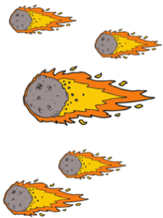

 Астероид е неголямо планетоподобно небесно тяло на орбита около Слънцето. Астероидите се смятат още за малки планети или планетоиди, с размери, много по-малки от тези на същинските планети. За повечето астероиди се смята, че са останки от протопланетарния диск преди 4,5 милиарда години, от който са формирани планетите, но не са погълнати от тях или изхвърлени извън Слънчевата система.Някои астероди имат собствени спътници. Почти всички астероиди се намират в астероидния пояс, на елиптични орбити между тези на Марс и Юпитер.Към 24 февруари 2005 г. от общо 277 090 малки планети с изчислени орбити за 99 906 астероида орбиталните параметри са известни достатъчно добре, за да бъдат регистрирани, и от тях на 12 198 са дадени имена (598 астероида имат имена, изискващи допълнителни определения). По-голямата част от откритите астероиди се намират в астероидния пояс между Марс и Юпитер в относително нискоексцентрицитетни орбити. В пояса се изчисляват от 1,1 до около 1,9 млн. астероида с диаметър над 1 km и милиони по-малки. Според текущите изчисления общият брой на астероидите в Слънчевата система е няколко милиона. Най-големият астероид е 1 Церера с диаметър от 932 km. Два други астероида – 2 Палада и 4 Веста, имат диаметри от приблизително 500 km. 4 Веста е единственият астероид в астероидния пояс, видим с невъоръжено око. В редки случаи астероиди, пресичащи земната орбита, са видими с невъоръжено око, като астероида 99942 Апофис. Общата маса на астероидите от пояса се изчислява на 3,0 – 3,6 × 1021 kg или около 4% от масата на Луната. От таза маса теглото на 1 Церера се изчислява на 0,95 × 1021 или около 32% от общото тегло. Като прибавим следващите три най-масивни астероида: 4 Веста (9%), 2 Палада (7%), и 10 Хигия (3%), четирите обекта представляват 51% от целия астероиден пояс. До 1998 г. процесът по откриване на нов астероид се състои от четири стъпки. Първо, даден отсек от небето се фотографира с широкоъгълен телескоп на два пъти в рамките на около един час. Второ, двете снимки се наблюдават през стереоскоп. По този начин всяко тяло, което е на орбита около Слънцето, „изпъква“ спрямо фона на звездите. Веднъж идентифициран, положението на обекта спрямо известни обекти се измерва с точност с помощта на микроскоп. Тези три стъпки не се считат за истинско откриване на астероида. Наблюдавано е само едно явление на обекта, който получава предварително означение, състоящо се от годината на откриване, двубуквен код на седмицата на откриване и пореден номер, ако повече от един обект е открит в рамките на една седмица. Последната стъпка се състои в изпращането на координатите и времето на наблюдението в Центъра за малки планети. След като орбитата му бъде потвърдена, на астероида бива даден номер и впоследствие може да му бъде дадено и име. Първите няколко астероида носят имена от гръко-римската митология, но след изчерпването на подобни имена астероидите впоследствие биват кръщавани на известни личности, жените на откривателите и дори телевизионни герои. Негласната традиция астероидите да носят женски имена продължава до именуването на 334 Чикаго, но дори и след това имена в женски род се използват често.